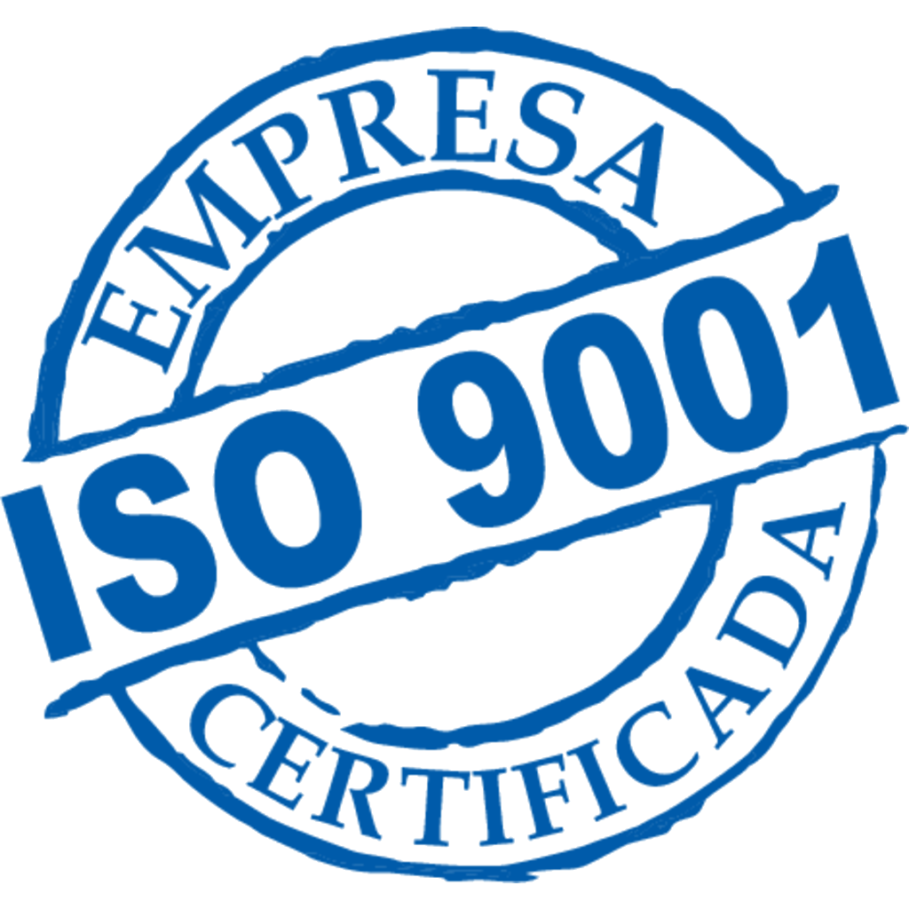

Nuestras Certificaciones

Científicos del MIT han desarrollado un sistema láser que actúa como una forja tradicional pero disparando partículas por láser contra el metal.
Ampliaremos..
en acero apuntando a los sectores industria, agronomía y construcción.
En 1970 fue fundado Por Pedro Guitierrez P. y desde la fecha pertenece a la familia.
Nuestro acero forma parte de la vida cotidiana y no podríamos vivir de la manera que lo hacemos sin él.
Puentes, autopistas, edificios, automóviles, ferrocarriles, electrodomésticos, herramientas de mano
y muchos objetos más no existirían sin el acero como componente.
Contamos con casi 80 años de historia en el país, siendo líderes en el mercado interno.